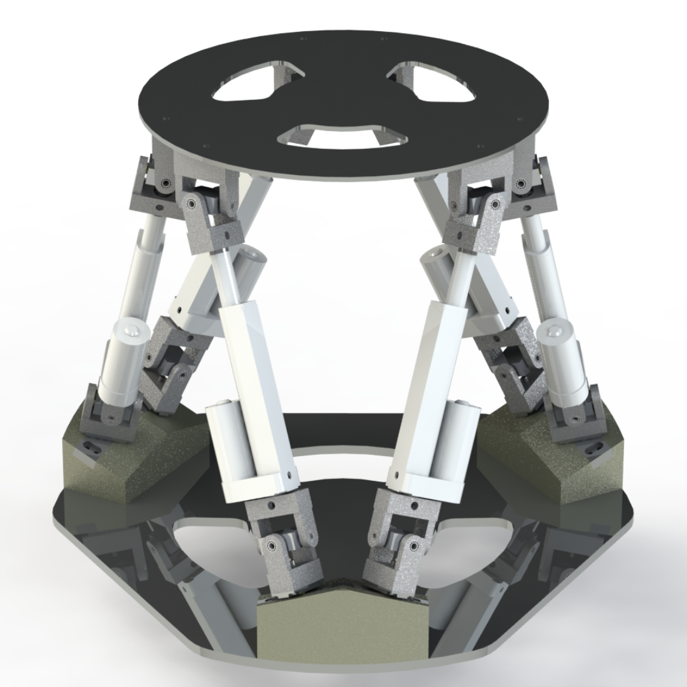
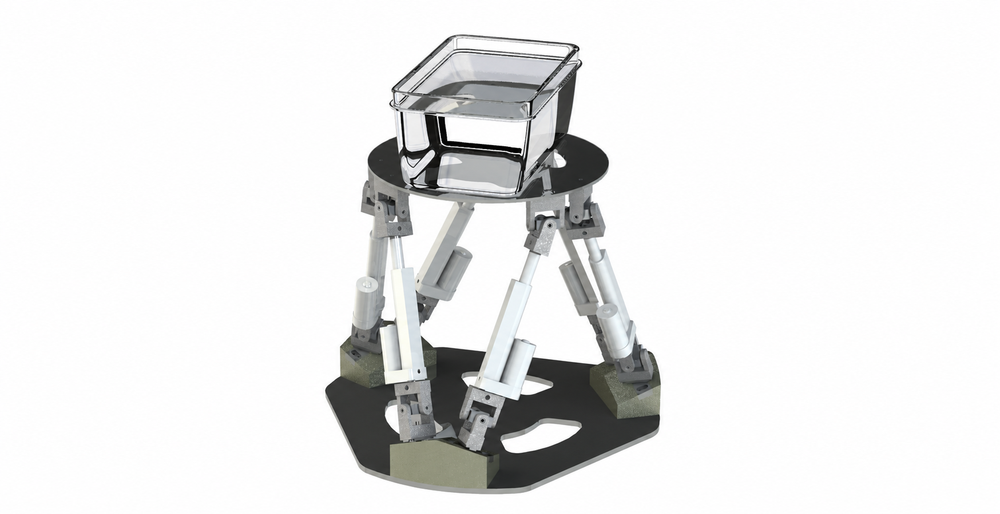

A smooth starting point
A symmetric reference is useful for initial commissioning because its velocity and acceleration are continuous.
ROBOTICS / RESPIRATORY MOTION SIMULATION
Six linear actuators. One moving platform. A laboratory motion base designed to reproduce breathing beneath a human anthropomorphic phantom.
Shobit Verma · RMML Lab, National Taiwan University · With Prof. Ping-Lang Yen & Zuo Haocheng
A target inside an abdomen moves as a person breathes. This project creates a repeatable laboratory motion base beneath a human anthropomorphic phantom, so researchers can investigate instrument positioning and respiratory-motion compensation against prescribed movement.
I developed and assembled the mechanical platform, including custom bearing-supported universal joints and angled actuator mounts. The design was optimized around range of motion, load requirements and a footprint suitable for a 20 kg human anthropomorphic phantom. STM32-based electronics and actuator control were integrated with the completed six-axis hardware.
MECHANICAL ARCHITECTURE
Six length-changing legs connect a stationary base to a moving top plate. Changing their lengths together produces translation along X, Y and Z, and rotation in roll, pitch and yaw.

Select a numbered componentCOMPONENT 01 / 04
The upper circular plate holds the human anthropomorphic phantom. Designed for a 20 kg payload, it supports the phantom and transfers platform motion to the abdominal fixture.

Payload design target: 20 kg human anthropomorphic phantom
Track the support plate and an internal target separately to measure how motion transfers into the human anthropomorphic phantom.
Validation plan ↗EXPLORE THE DESIGN
TRY THE MOTION MODEL
Start with a smooth periodic reference, then change its timing and excursion. In asymmetric mode, adjust the inhalation and exhalation timing to give the curve different rising and falling durations. Both are analytical examples; recorded breathing would supply its own time series.
Adjust either slider to change the inhalation/exhalation split while keeping the breathing rate fixed.
A symmetric reference is useful for initial commissioning because its velocity and acceleration are continuous.
Different inhalation and exhalation durations create an asymmetric curve, with smooth transitions at the start, peak and end of the cycle.
Patient-specific inputs require time-stamped measurements, baseline handling and a defined phantom-to-target mapping.
FROM PARTS TO A PLATFORM
71 + 162 + 108 parts brought together in the final assembly.
54 radial and 54 thrust bearings assembled into the joint hardware.
258 + 162 screw operations, alongside grinding, filing and gluing.
The physical work combined plate and frame preparation, joint assembly, bearing installation and alignment of six actuator modules. Repeated fitting and finishing helped the custom components work together as one mechanism.
Prototype parts that did not fit the assembly requirements were sent for redesign and rework. Grinding, filing and repeated fitting were part of bringing the custom joint and mounting hardware together.
DESIGNED AROUND ARTICULATION
Each actuator must change its orientation as well as its length. I designed and assembled the universal-joint hardware to provide multi-axis articulation within the available mounting space.
THE BEARING STACK
Radial and thrust bearings support the joint’s load paths while allowing the shafts to articulate. The joint envelope was kept close to the shaft, making clearance a central design constraint.
INTEGRATED ELECTRONICS
The electronic circuit was assembled and integrated with the platform. An STM32 controller executes inverse kinematics and actuator-control algorithms, while HIWIN drivers and encoder feedback connect the software to the six linear actuators.
Analytical input or a time-stamped measured signal.
Six coordinates with defined amplitudes and phase offsets.
Compute six set-points using calibrated anchor geometry.
Synchronized drive commands with encoder feedback.
Feedback: measured leg extension → tracking error → drive correction. Independent pose tracking can verify how the moving plate and phantom actually respond.
| Component | Role in the system |
|---|---|
| 6 × HIWIN linear actuators | Produce linear motion for the six platform legs. |
| STM32 MCU | Executes inverse kinematics and actuator-control algorithms. |
| ST-LINK/V2 | Programs and debugs the STM32 microcontroller. |
| Custom PCB | Interfaces the controller with drivers, sensors and circuitry. |
| HIWIN motor driver board | Drives the actuator motors from STM32 commands. |
| 8-channel relay section | Controls auxiliary loads and switching. |
| Terminal blocks | Provide secure connections between electrical components. |
| DC power supply adapter | Supplies regulated power to the controller and actuators. |
| Power strip | Distributes power across the bench equipment. |
| Oscilloscope probe | Monitors signals during debugging. |
| Status LEDs | Indicate power and system states. |
| HIWIN encoder | Provides position feedback for closed-loop actuator control. |
| Limit switches | Establish reference positions and prevent overtravel. |
Each servo compares desired and measured extension. Bounded PID action with feedforward, saturation and anti-windup provides a baseline approach; gains depend on the actual drives, sampling rate and payload.
Check actuator stroke, speed, acceleration, joint articulation and collision clearance. Reject infeasible trajectories and monitor stalls, encoder faults and loss of synchronization.
Baseline, amplitude and phase may vary over time. Any learning-based reconstruction needs a documented dataset, sampling protocol and independent evaluation; it is a research pathway rather than a demonstrated result here.
A numerical forward solution can warm-start from the last valid pose. External motion capture is needed to verify the estimate and identify incorrect assembly modes.
POSE → SIX LENGTHS
Inverse kinematics answers a direct question: for the desired position and orientation of the upper plate, how long should each leg be? The same calculation is repeated for all six attachment-point pairs.
One leg shown for clarity; schematic, not to scale.
Rotate the local plate anchor aᵢ, then add the platform translation p.
Subtract the fixed base anchor bᵢ to obtain the leg vector.
The norm is the joint-center separation. Subtract the calibrated reference length for the actuator extension.
Use a consistent rotation convention: R = Rz(ψ) Ry(θ) Rx(φ). The full rotation matrix preserves the nonlinear relationship between the moving anchors and leg lengths.
Stacking the six rows gives the velocity Jacobian, ℓ̇ = J [ṗᵀ ωᵀ]ᵀ. A normalized Jacobian helps assess proximity to singularities; translational and rotational terms need an explicit characteristic length.
This quasi-static relation maps axial leg forces to the platform wrench. Payload inertia, friction and compliance require a fuller dynamic model.
The twelve joint-center coordinates and six actuator reference lengths must be measured or extracted from the final CAD assembly. The interactive example above uses nominal geometry and is not a hardware command generator.
BUILD → INTEGRATE → CHARACTERIZE
COMPLETED
FURTHER CHARACTERIZATION
The integrated hardware and simulation demonstrated the platform’s six-axis operation. Independent measurements can now quantify dynamic tracking error, repeatability, temporal lag and motion transfer into the phantom. Numerical tracking accuracy and patient-specific performance require those measurements.
Measure anchors, joint clearance, stroke and reference pose.
Establish homing, feedback scaling and individual servo limits.
Test static poses, repeatability and periodic motion with independent metrology.
Test combined translations and rotations, synchronization and workspace margins.
Track external markers and an internal target separately.
Compare stationary and moving-target needle tasks, with and without compensation.
Commanded versus independently measured translation and orientation.
Largest tracking deviation over the test interval.
Timing difference between the reference and measured motion.
Variation across repeated nominally identical cycles.
Internal-marker motion compared with the prescribed target trajectory.
Drift and performance change after repeated loaded cycles.
DESIGN RECORD
The patent report includes the Indian filing receipt followed by the technical report on mechanical assembly, inverse kinematics, analytical breathing models and the proposed controller and validation sequence.
View Patent Report ↗Mechanism, inverse kinematics, respiratory motion and validation.
PDF · 12 PAGESDesign, manufacturing, hardware assembly and electronic control.
REQUESTGet in touch to request the assembly and individual part files.
XLSXOne table of mechanical parts and electronics.